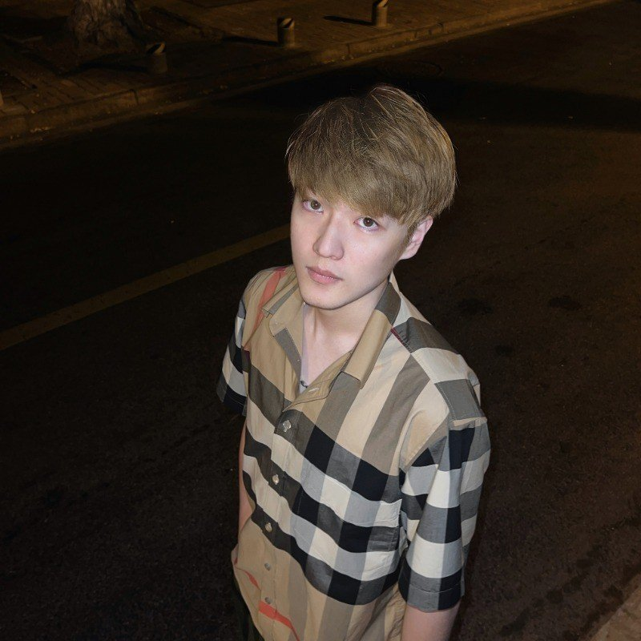

Aug 2025 – May 2029 (expected)
Ph.D., Applied Mathematics & Computational Science
University of Pennsylvania, Wang Genomics Lab at CHOP
- Advised by Dr. Kai Wang.
- Multimodal LLMs and explainable AI for genetic disease diagnosis.
Zhanliang (Aaron) Wang 王湛梁
PhD student in Applied Mathematics and Computational Science at the University of Pennsylvania, working with Dr. Kai Wang in the Wang Genomics Lab at Children’s Hospital of Philadelphia.
Explore my work
I work on making AI for healthcare interpretable, multimodal, and trustworthy, with a focus on diagnosing genetic diseases. That means combining large language models with images, clinical text, and genomic data, and then making sure the model can say how confident it is and why.
I’m advised by Dr. Kai Wang (CHOP and the Perelman School of Medicine) and am also pursuing an M.A. in Statistics and Data Science at Wharton. During my master’s at Penn I was advised by Dr. Li Shen, and I collaborate closely with Dr. Bojian Hou, AI Research Scientist at Meta, and Dr. Jiancong Xiao, Assistant Professor in the Department of Computer Science at the National University of Singapore, on LLM algorithms. Before Penn I earned a B.S. in Applied Mathematics, summa cum laude, from NYU Courant and Tandon, having started my undergraduate studies in Applied Mathematics and Statistics at Stony Brook University. I grew up in Qingdao, China, and graduated from Qingdao No. 58 High School.
Off the clock you’ll find me playing street basketball. Big fan of LeBron James and the 76ers.

Selected work / 01—04
From measuring uncertainty to learning from multimodal expertise.
Nothing in this category yet.
Full list on Google Scholar.
Open to collaborations on multimodal and trustworthy AI for medicine, and always happy to compare notes on calibration.
Zhanliang.Wang666@gmail.com